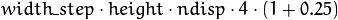
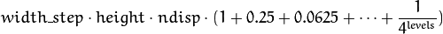
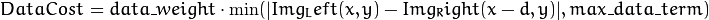
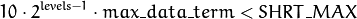

Camera Calibration and 3D Reconstruction¶
ocl::StereoBM_OCL¶
-
class
ocl::StereoBM_OCL¶
Class computing stereo correspondence (disparity map) using the block matching algorithm.
class CV_EXPORTS StereoBM_OCL
{
public:
enum { BASIC_PRESET = 0, PREFILTER_XSOBEL = 1 };
enum { DEFAULT_NDISP = 64, DEFAULT_WINSZ = 19 };
//! the default constructor
StereoBM_OCL();
//! the full constructor taking the camera-specific preset, number of disparities and the SAD window size. ndisparities must be multiple of 8.
StereoBM_OCL(int preset, int ndisparities = DEFAULT_NDISP, int winSize = DEFAULT_WINSZ);
//! the stereo correspondence operator. Finds the disparity for the specified rectified stereo pair
//! Output disparity has CV_8U type.
void operator() ( const oclMat &left, const oclMat &right, oclMat &disparity);
//! Some heuristics that tries to estmate
// if current GPU will be faster then CPU in this algorithm.
// It queries current active device.
static bool checkIfGpuCallReasonable();
int preset;
int ndisp;
int winSize;
// If avergeTexThreshold == 0 => post procesing is disabled
// If avergeTexThreshold != 0 then disparity is set 0 in each point (x,y) where for left image
// SumOfHorizontalGradiensInWindow(x, y, winSize) < (winSize * winSize) * avergeTexThreshold
// i.e. input left image is low textured.
float avergeTexThreshold;
private:
/* hidden */
};
The class also performs pre- and post-filtering steps: Sobel pre-filtering (if PREFILTER_XSOBEL flag is set) and low textureness filtering (if averageTexThreshols > 0 ). If avergeTexThreshold = 0 , low textureness filtering is disabled. Otherwise, the disparity is set to 0 in each point (x, y) , where for the left image

This means that the input left image is low textured.
ocl::StereoBM_OCL::StereoBM_OCL¶
Enables ocl::StereoBM_OCL constructors.
-
C++:
ocl::StereoBM_OCL::StereoBM_OCL()¶
-
C++:
ocl::StereoBM_OCL::StereoBM_OCL(int preset, int ndisparities=DEFAULT_NDISP, int winSize=DEFAULT_WINSZ)¶ Parameters: - preset –
Parameter presetting:
- BASIC_PRESET Basic mode without pre-processing.
- PREFILTER_XSOBEL Sobel pre-filtering mode.
- ndisparities – Number of disparities. It must be a multiple of 8 and less or equal to 256.
- winSize – Block size.
- preset –
ocl::StereoBM_OCL::operator ()¶
Enables the stereo correspondence operator that finds the disparity for the specified rectified stereo pair.
-
C++:
ocl::StereoBM_OCL::operator()(const oclMat& left, const oclMat& right, oclMat& disparity)¶ Parameters: - left – Left image. Only
CV_8UC1type is supported. - right – Right image with the same size and the same type as the left one.
- disparity – Output disparity map. It is a
CV_8UC1image with the same size as the input images.
- left – Left image. Only
ocl::StereoBM_OCL::checkIfGpuCallReasonable¶
Uses a heuristic method to estimate whether the current GPU is faster than the CPU in this algorithm. It queries the currently active device.
-
C++:
ocl::StereoBM_OCL::checkIfGpuCallReasonable()¶
ocl::StereoBeliefPropagation¶
-
class
ocl::StereoBeliefPropagation¶
Class computing stereo correspondence using the belief propagation algorithm.
class CV_EXPORTS StereoBeliefPropagation
{
public:
enum { DEFAULT_NDISP = 64 };
enum { DEFAULT_ITERS = 5 };
enum { DEFAULT_LEVELS = 5 };
static void estimateRecommendedParams(int width, int height, int &ndisp, int &iters, int &levels);
explicit StereoBeliefPropagation(int ndisp = DEFAULT_NDISP,
int iters = DEFAULT_ITERS,
int levels = DEFAULT_LEVELS,
int msg_type = CV_16S);
StereoBeliefPropagation(int ndisp, int iters, int levels,
float max_data_term, float data_weight,
float max_disc_term, float disc_single_jump,
int msg_type = CV_32F);
void operator()(const oclMat &left, const oclMat &right, oclMat &disparity);
void operator()(const oclMat &data, oclMat &disparity);
int ndisp;
int iters;
int levels;
float max_data_term;
float data_weight;
float max_disc_term;
float disc_single_jump;
int msg_type;
private:
/* hidden */
};
The class implements algorithm described in [Felzenszwalb2006] . It can compute own data cost (using a truncated linear model) or use a user-provided data cost.
Note
StereoBeliefPropagation requires a lot of memory for message storage:

and for data cost storage:

width_step is the number of bytes in a line including padding.
ocl::StereoBeliefPropagation::StereoBeliefPropagation¶
Enables the ocl::StereoBeliefPropagation constructors.
-
C++:
ocl::StereoBeliefPropagation::StereoBeliefPropagation(int ndisp=DEFAULT_NDISP, int iters=DEFAULT_ITERS, int levels=DEFAULT_LEVELS, int msg_type=CV_16S)¶
-
C++:
ocl::StereoBeliefPropagation::StereoBeliefPropagation(int ndisp, int iters, int levels, float max_data_term, float data_weight, float max_disc_term, float disc_single_jump, int msg_type=CV_32F)¶ Parameters: - ndisp – Number of disparities.
- iters – Number of BP iterations on each level.
- levels – Number of levels.
- max_data_term – Threshold for data cost truncation.
- data_weight – Data weight.
- max_disc_term – Threshold for discontinuity truncation.
- disc_single_jump – Discontinuity single jump.
- msg_type – Type for messages.
CV_16SC1andCV_32FC1types are supported.
StereoBeliefPropagation uses a truncated linear model for the data cost and discontinuity terms:


For more details, see [Felzenszwalb2006].
By default, ocl::StereoBeliefPropagation uses floating-point arithmetics and the CV_32FC1 type for messages. But it can also use fixed-point arithmetics and the CV_16SC1 message type for better performance. To avoid an overflow in this case, the parameters must satisfy the following requirement:

ocl::StereoBeliefPropagation::estimateRecommendedParams¶
Uses a heuristic method to compute the recommended parameters ( ndisp, iters and levels ) for the specified image size ( width and height ).
-
C++:
ocl::StereoBeliefPropagation::estimateRecommendedParams(int width, int height, int& ndisp, int& iters, int& levels)¶
ocl::StereoBeliefPropagation::operator ()¶
Enables the stereo correspondence operator that finds the disparity for the specified rectified stereo pair or data cost.
-
C++:
ocl::StereoBeliefPropagation::operator()(const oclMat& left, const oclMat& right, oclMat& disparity)¶
-
C++:
ocl::StereoBeliefPropagation::operator()(const oclMat& data, oclMat& disparity)¶ Parameters: - left – Left image.
CV_8UC1,CV_8UC3andCV_8UC4types are supported. - right – Right image with the same size and the same type as the left one.
- data – User-specified data cost, a matrix of
msg_typetype andSize(<image columns>*ndisp, <image rows>)size. - disparity – Output disparity map. If
disparityis empty, the output type isCV_16SC1. Otherwise, the type is retained.
- left – Left image.
ocl::StereoConstantSpaceBP¶
-
class
ocl::StereoConstantSpaceBP¶
Class computing stereo correspondence using the constant space belief propagation algorithm.
class CV_EXPORTS StereoConstantSpaceBP
{
public:
enum { DEFAULT_NDISP = 128 };
enum { DEFAULT_ITERS = 8 };
enum { DEFAULT_LEVELS = 4 };
enum { DEFAULT_NR_PLANE = 4 };
static void estimateRecommendedParams(int width, int height, int &ndisp, int &iters, int &levels, int &nr_plane);
explicit StereoConstantSpaceBP(
int ndisp = DEFAULT_NDISP,
int iters = DEFAULT_ITERS,
int levels = DEFAULT_LEVELS,
int nr_plane = DEFAULT_NR_PLANE,
int msg_type = CV_32F);
StereoConstantSpaceBP(int ndisp, int iters, int levels, int nr_plane,
float max_data_term, float data_weight, float max_disc_term, float disc_single_jump,
int min_disp_th = 0,
int msg_type = CV_32F);
void operator()(const oclMat &left, const oclMat &right, oclMat &disparity);
int ndisp;
int iters;
int levels;
int nr_plane;
float max_data_term;
float data_weight;
float max_disc_term;
float disc_single_jump;
int min_disp_th;
int msg_type;
bool use_local_init_data_cost;
private:
/* hidden */
};
The class implements algorithm described in [Yang2010]. StereoConstantSpaceBP supports both local minimum and global minimum data cost initialization algorithms. For more details, see the paper mentioned above. By default, a local algorithm is used. To enable a global algorithm, set use_local_init_data_cost to false .
ocl::StereoConstantSpaceBP::StereoConstantSpaceBP¶
Enables the ocl::StereoConstantSpaceBP constructors.
-
C++:
ocl::StereoConstantSpaceBP::StereoConstantSpaceBP(int ndisp=DEFAULT_NDISP, int iters=DEFAULT_ITERS, int levels=DEFAULT_LEVELS, int nr_plane=DEFAULT_NR_PLANE, int msg_type=CV_32F)¶
-
C++:
ocl::StereoConstantSpaceBP::StereoConstantSpaceBP(int ndisp, int iters, int levels, int nr_plane, float max_data_term, float data_weight, float max_disc_term, float disc_single_jump, int min_disp_th=0, int msg_type=CV_32F)¶ Parameters: - ndisp – Number of disparities.
- iters – Number of BP iterations on each level.
- levels – Number of levels.
- nr_plane – Number of disparity levels on the first level.
- max_data_term – Truncation of data cost.
- data_weight – Data weight.
- max_disc_term – Truncation of discontinuity.
- disc_single_jump – Discontinuity single jump.
- min_disp_th – Minimal disparity threshold.
- msg_type – Type for messages.
CV_16SC1andCV_32FC1types are supported.
StereoConstantSpaceBP uses a truncated linear model for the data cost and discontinuity terms:

For more details, see [Yang2010].
By default, StereoConstantSpaceBP uses floating-point arithmetics and the CV_32FC1 type for messages. But it can also use fixed-point arithmetics and the CV_16SC1 message type for better performance. To avoid an overflow in this case, the parameters must satisfy the following requirement:
ocl::StereoConstantSpaceBP::estimateRecommendedParams¶
Uses a heuristic method to compute parameters (ndisp, iters, levelsand nrplane) for the specified image size (widthand height).
-
C++:
ocl::StereoConstantSpaceBP::estimateRecommendedParams(int width, int height, int& ndisp, int& iters, int& levels, int& nr_plane)¶
ocl::StereoConstantSpaceBP::operator ()¶
Enables the stereo correspondence operator that finds the disparity for the specified rectified stereo pair.
-
C++:
ocl::StereoConstantSpaceBP::operator()(const oclMat& left, const oclMat& right, oclMat& disparity)¶ Parameters: - left – Left image.
CV_8UC1,CV_8UC3andCV_8UC4types are supported. - right – Right image with the same size and the same type as the left one.
- disparity – Output disparity map. If
disparityis empty, the output type isCV_16SC1. Otherwise, the output type isdisparity.type().
- left – Left image.
Help and Feedback
You did not find what you were looking for?- Ask a question on the Q&A forum.
- If you think something is missing or wrong in the documentation, please file a bug report.

Table Of Contents
- Camera Calibration and 3D Reconstruction
- ocl::StereoBM_OCL
- ocl::StereoBM_OCL::StereoBM_OCL
- ocl::StereoBM_OCL::operator ()
- ocl::StereoBM_OCL::checkIfGpuCallReasonable
- ocl::StereoBeliefPropagation
- ocl::StereoBeliefPropagation::StereoBeliefPropagation
- ocl::StereoBeliefPropagation::estimateRecommendedParams
- ocl::StereoBeliefPropagation::operator ()
- ocl::StereoConstantSpaceBP
- ocl::StereoConstantSpaceBP::StereoConstantSpaceBP
- ocl::StereoConstantSpaceBP::estimateRecommendedParams
- ocl::StereoConstantSpaceBP::operator ()